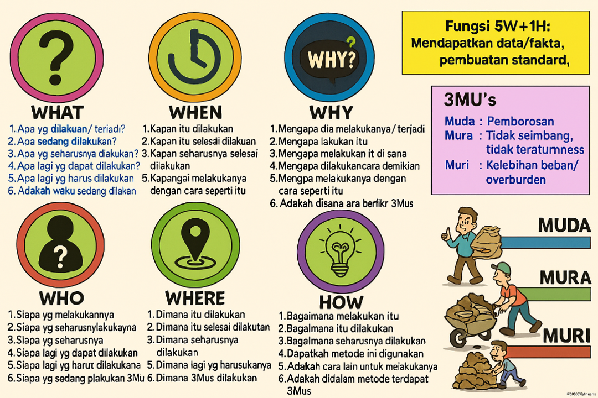

Kaizen merupakan istilah dalam bahasa Jepang yang bermakna "perbaikan berkesinambungan". Filsafat kaizen berpandangan bahwa hidup kita hendaknya fokus pada upaya perbaikan terus-menerus. Pada penerapannya dalam perusahaan, kaizen mencakup pengertian perbaikan berkesinambungan yang melibatkan seluruh pekerjanya, dari manajemen tingkat atas sampai manajemen tingkat bawah.
Siklus PDCA yang Menjadi Salah Satu Kunci Keberhasilan Kaizen
KONSEP
Dalam kaizen manajemen memiliki dua fungsi utama:
1. Pemeliharaan
Kegiatan pemeliharaan teknologi, sistem manajemen, dan standar operasional yang ada sekaligus menjaga standar tersebut melalui pelatihan serta disiplin dengan tujuan agar semua karyawan dapat mematuhi prosedur pengoperasian standar (Standard Operating Procedure-SOP) yang telah ditetapkan.
2. Perbaikan
Kegiatan yang diarahkan pada meningkatkan standar yang ada.
Kedua fungsi ini disimpulkan sebagai Pemeliharaan dan Perbaikan Standar. Perbaikan ini sendiri dapat terbagi menjadi kaizen dan inovasi. Kaizen bersifat perbaikan kecil yang berlangsung oleh upaya berkesinambungan, sedangkan inovasi merupakan perbaikan drastis sebagai hasil dari investasi sumber daya berjumlah besar dalam teknologi atau peralatan. Kaizen menekankan pada upaya manusia, moral, komunikasi, pelatihan, kerja sama, pemberdayaan dan disiplin diri, yang merupakan pendekatan peningkatan berdasarkan akal sehat, berbiaya rendah.
Sasaran akhir kaizen adalah tercapainya Kualitas, Biaya, Distribusi (Quality, Cost, Delivery—QCD), sehingga pada praktiknya kaizen menempatkan kualitas pada prioritas tertinggi. Kaizen mengajarkan bahwa perusahaan tidak akan mampu bersaing jika kualitas produk dan pelayanannya tidak memadai, sehingga komitmen manajemen terhadap kualitas sangat dijunjung tinggi. Kualitas yang dimaksud dalam QCD bukan sekadar kualitas produk melainkan termasuk kualitas proses yang ditempuh dalam menghasilkan produknya.
Kaizen menekankan bahwa tahap pemrosesan dalam perusahaan harus disempurnakan agar hasil dapat meningkat, sehingga dapat disimpulkan bahwa filsafat ini mengutamakan proses. Dalam kaizen dipercaya bahwa proses yang baik akan memberikan hasil yang baik pula.
Salah satu langkah awal penerapan kaizen adalah menjalankan siklus Plan-Do-Check-Act (PDCA) untuk menjamin terlaksananya kesinambungan kaizen. Siklus ini terdiri atas:
- Rencana (plan): Penetapan target untuk perbaikan dan perumusan rencana tindakan guna mencapai target tersebut.
- Lakukan (do): Pelaksanaan dari rencana yang telah dibuat.
- Periksa (check): Kegiatan pemeriksaan segala prosedur yang telah dijalankan guna memastikannya agar tetap berjalan sesuai rencana sekaligus memantau kemajuan yang telah ditempuh.
- Tindak (act): Menindaklanjuti ketiga langkah yang ditempuh sekaligus memutuskankan prosedur baru guna menghindari terjadinya kembali masalah yang sama atau menetapkan sasaran baru bagi perbaikan berikutnya.
Siklus PDCA berputar secara terus menerus dengan diselingi oleh siklus Standarize-Do-Check-Act (SDCA) di antaranya. Dalam langkah Standar (Standarize) pada siklus ini, segala prosedur baru yang telah diputuskan pada langkah Tindak (Act) dalam siklus PDCA sebelumnya disahkan menjadi pedoman yang wajib dipenuhi. SDCA fokus pada kegiatan pemeliharaan, sedangkan PDCA lebih mengacu pada perbaikan.
Masalah yang terjadi baru dapat ditemukan pemecahannya dengan mengumpulkan dan mengobservasi berbagai data yang berkaitan dengan masalah tersebut. Tanpa adanya data yang terintegrasi dan relevan, manajemen tidak dapat menemukan solusi yang paling efektif.
Terdapat dua macam konsumen dalam kaizen:
- Konsumen internal: Konsumen yang berada di perusahaan. Yang dianggap sebagai konsumen internal adalah proses, sehingga proses harus diperhatikan dan diperlakukan layaknya konsumen secara nyata.
- Konsumen eksternal: Konsumen yang berada di pasar, baik individu maupun organisasi.
Sasaran akhir kaizen adalah tercapainya Quality, Cost, Delivery (QCD) secara efektif dan efisien.
5W1H
5W1H (What, Why, Who, Where, When, How) adalah metode yang sistematis untuk menganalisis masalah, mengidentifikasi akar penyebab, dan merencanakan solusi yang efektif.
Berikut adalah rincian bagaimana 5W1H diterapkan:
Mengidentifikasi apa masalah atau peluang perbaikan yang terjadi secara spesifik. Ini mendefinisikan ruang lingkup proyek.
Memahami mengapa masalah tersebut terjadi atau mengapa perbaikan diperlukan. Ini membantu dalam menemukan akar penyebab (analisis root cause) dan memvalidasi pentingnya proyek.
Menentukan siapa yang terlibat atau terpengaruh oleh masalah tersebut (pelanggan, karyawan, pemasok) dan siapa yang bertanggung jawab untuk mengambil tindakan perbaikan.
Menentukan di mana masalah tersebut terjadi (lokasi spesifik, departemen, lini produksi). Ini membantu mempersempit fokus analisis.
Mengidentifikasi kapan masalah tersebut terjadi (frekuensi, waktu tertentu dalam sehari/minggu, atau tren musiman). Ini membantu dalam penjadwalan dan pemantauan.
Merencanakan bagaimana solusi akan diimplementasikan, bagaimana data akan dikumpulkan, dan bagaimana efektivitas tindakan perbaikan akan diukur. Ini mencakup langkah-langkah konkret dari rencana tindakan.
Dengan menggunakan kerangka kerja ini, tim dapat memastikan bahwa setiap aspek masalah telah dipertimbangkan secara menyeluruh sebelum menerapkan solusi, sehingga meningkatkan kemungkinan keberhasilan perbaikan.
Why Why Analysis
Why Why Analysis adalah alat untuk membantu mengidentifikasi akar masalah atau penyebab dari sebuah ketidaksesuaian pada proses atau produk. Gambar di atas menggambarkan corong dengan tiga tahapan utama:
- Mencari Potential Causes: Biasanya berjumlah lebih dari satu.
- Mencari Significant Causes: Diambil dari salah satu potential causes yang paling berpengaruh.
- Mencari Root Causes: Akar masalah dari significant causes tersebut.
Tujuan Why-Why Analysis:
- Menggunakan kemampuan logika
- Pemahaman struktur mesin
- Mencegah perulangan masalah
- Pertukaran pikiran kepada sesama member
Point penting: Analisa berdasarkan fakta yang ada (bukan bayangan yang ada) menganalisa faktor-faktor penyebab.
| 5 Prinsip Why-Why Analysis: | ||||
| 1 | Fakta (aktual scene) | Genba | → aktual tempat kejadian |
5 Gen-ism
|
| 2 | Amati langsung hal sebenarnya (ex. Defect) | Genbutsu | → actual object | |
| 3 | Memecahkan masalah apa yang terjadi | Genjitsu | → actual Data | |
| 4 | Memahami standardnya seperti apa | Gensoku | → standard parameter | |
| 5 | Analisa penyebabnya | Genri | → Prinsip kerja pada manual | |
- Menentukan masalahnya dan area masalahnya
- Mengumpulkan team untuk brainstorming sehingga kita bisa memiliki berbagai pandangan, pengetahuan, pengalaman, dan pendekatan yang berbeda terhadap masalah
-
Melakukan gemba (turun ke lapangan) untuk melihat:
- Actual tempat (Genba)
- Actual object (Genbutsu)
- Actual data (Genjitsu)
- Prinsip kerja pada manual (Genri)
- Standar parameter (Gensoku)
- Mulai bertanya menggunakan why-why
- Setelah sampai pada akar masalah, ujilah setiap jawaban dari yang terbawah apakah jawaban tersebut akan berdampak pada akibat di level atasnya (Trace Back)
- Pada umumnya solusi tidak mengarah pada menyalahkan ke orang tapi bagaimana cara melakukan perbaikan sistem atau prosedur
- Jika akar penyebab sudah diketahui maka segera implementasikan solusinya
- Monitor terus performancenya untuk memastikan bahwa masalah tersebut tidak terulang lagi
Contoh Kasus: Ban Bocor
Masalah: Ban motor kempes tiba-tiba di perjalanan Bekasi-Jakarta.
Significant Cause: Ban sudah tipis (setelah divalidasi bukan karena paku atau beban).
Why 1: Kenapa ban tipis?
→ Karena belum diganti.
Why 2: Kenapa belum diganti?
→ Karena tidak ada jadwal ganti (lupa).
Why 3: Kenapa tidak ada jadwal ganti?
→ Karena tidak dicatat kilometernya saat ganti sebelumnya.
Why 4: Kenapa tidak dicatat kilometernya?
→ Karena speedometer mati.
Why 5: Kenapa speedometer mati?
→ Kabelnya putus (Root Cause).
Anak kecil itu menangis karena sedih, sedih karena ikan hiasnya mati, ikan hiasnya mati karena akuarium jatuh.
Akarium jatuh oleh sebab itu ikan masnya mati, ikan masnya mati oleh sebab itu anak kecil itu sedih, anak kecil itu sedih oleh sebab itu menangis.
Stop
A: Overload tripped out!
Resolve by: Re-set trip?
A: Insufficient oil on shaft!
Resolve by: More oil?
A: Oil pump is inefficient!
Resolve by: new pump?
A: Pump drive shaft worn!
Resolve by: Change Shaft?
A: Oil filter blocked with swarf!
Resolve by: Clean filter?